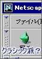
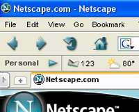
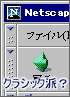
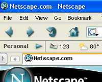
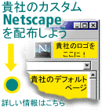
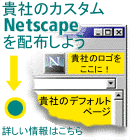

現存する各言語版画保存されています。日本語版は4.7以降があります。6以降もあります。 ネットスケープのFTP鯖のアーカイブ
アーカイブされてないものもあるので注意 ない場合はファイル名で検索すれば見つけられるかも
ftp.nlug.nl/
こちらも保存サイト ver4.7,Ver6以降が豊富です
archive.netscape.com
米AOLによるアーカイブサイト 日本語版は6.01から
こちらもアーカイブサイト肝心のファイルはリンク切れ多目です。 Netscape Browser Archive
FTPのアーカイブ
ftp://archive.netscape.com
関連サイト諸々
Version 9の時の公式サイト
Archive Teamによるアーカイブ
ロゴコンテスト
Netscape Animation Contest
1996年のネスケ公式サイト Welcome to Netscape
ダウンロード
Netscapeへようこそ
ネットスケープへようこそ
ニュースサイトや2chスレ
ITコンシェルジュの Try ! & Error ? > Netscape 消滅 : ITmedia オルタナティブ・ブログ
あったの!? 懐かしの「Netscape Navigator」に最新9.0RC1登場 (1) 遅れてきた大御所「Netscape」がバージョンアップ | マイナビニュース
Netscape Navigator - タブブラウザ推奨委員会
Netscapeスレッド Part21
過去の「Webブラウザのセキュリティ情報（Netscape編）」
日本語版 Netscape Watch
Re(4):Netscape 2.02ja??こちらが正しいURL | WebBoard Internetの部屋
「Netscape Navigator」が無償配布開始 - インターネットの歴史 History of the Internet - Yahoo! JAPAN
Netscape 1.22; browser museum
Main :: Netscape Navigator Web Browser
日本語版が提供されていないネスケ用の日本語化アドオン
Netscape Navigator 9.0 用日本語化パック - 蒼い海に溺れて2nd season
古いネスケ,IEなどがダウンロードできる。 Winodws 3.1でインターネットに接続しよう
その29
 




 

TOPに戻る